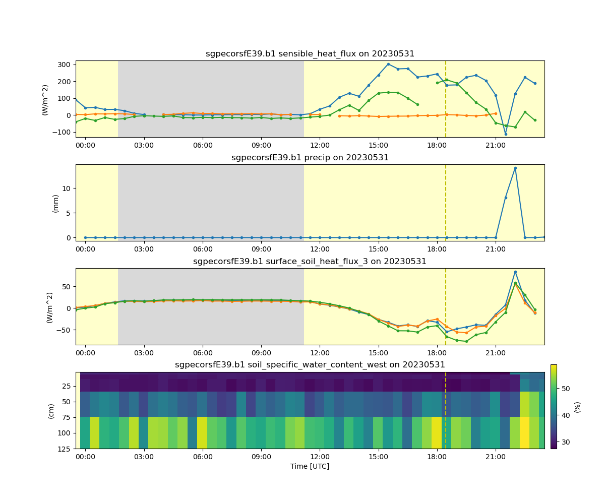

Note
Go to the end to download the full example code.
Convert Data to AmeriFlux Format#
This script shows how to convert ARM data to AmeriFlux format using an ACT function, and write it out to csv. More information on AmeriFlux and their file formats and naming conventions can be found here: https://ameriflux.lbl.gov/
Author: Adam Theisen
import act
import glob
import xarray as xr
import os
import matplotlib.pyplot as plt
# Read in the ECOR data
files = glob.glob(act.tests.sample_files.EXAMPLE_ECORSF_E39)
ds_ecor = act.io.arm.read_arm_netcdf(files)
# The ECOR time stamp as at the end of the Averaging period so adjusting
# it to be consistent with the other systems
ds_ecor = act.utils.datetime_utils.adjust_timestamp(ds_ecor)
# Clean up and QC the data based on embedded QC and ARM DQRs
ds_ecor.clean.cleanup()
ds_ecor = act.qc.arm.add_dqr_to_qc(ds_ecor)
ds_ecor.qcfilter.datafilter(
del_qc_var=False, rm_assessments=['Bad', 'Incorrect', 'Indeterminate', 'Suspect']
)
# Then we do this same thing for the other instruments
# SEBS
files = glob.glob(act.tests.sample_files.EXAMPLE_SEBS_E39)
ds_sebs = act.io.arm.read_arm_netcdf(files)
# SEBS does not have a time_bounds variable so we have to manually adjust it
ds_sebs = act.utils.datetime_utils.adjust_timestamp(ds_sebs, offset=-30 * 60)
ds_sebs.clean.cleanup()
ds_sebs = act.qc.arm.add_dqr_to_qc(ds_sebs)
ds_sebs.qcfilter.datafilter(
del_qc_var=False, rm_assessments=['Bad', 'Incorrect', 'Indeterminate', 'Suspect']
)
# STAMP
files = glob.glob(act.tests.sample_files.EXAMPLE_STAMP_E39)
ds_stamp = act.io.arm.read_arm_netcdf(files)
ds_stamp.clean.cleanup()
ds_stamp = act.qc.arm.add_dqr_to_qc(ds_stamp)
ds_stamp.qcfilter.datafilter(
del_qc_var=False, rm_assessments=['Bad', 'Incorrect', 'Indeterminate', 'Suspect']
)
# STAMP Precipitation
files = glob.glob(act.tests.sample_files.EXAMPLE_STAMPPCP_E39)
ds_stamppcp = act.io.arm.read_arm_netcdf(files)
ds_stamppcp.clean.cleanup()
ds_stamppcp = act.qc.arm.add_dqr_to_qc(ds_stamppcp)
ds_stamppcp.qcfilter.datafilter(
del_qc_var=False, rm_assessments=['Bad', 'Incorrect', 'Indeterminate', 'Suspect']
)
# These are minute data so we need to resample and sum up to 30 minutes
ds_stamppcp = ds_stamppcp['precip'].resample(time='30Min').sum()
# AMC
files = glob.glob(act.tests.sample_files.EXAMPLE_AMC_E39)
ds_amc = act.io.arm.read_arm_netcdf(files)
ds_amc.clean.cleanup()
ds_amc = act.qc.arm.add_dqr_to_qc(ds_amc)
ds_amc.qcfilter.datafilter(
del_qc_var=False, rm_assessments=['Bad', 'Incorrect', 'Indeterminate', 'Suspect']
)
# Merge these datasets together
ds = xr.merge([ds_ecor, ds_sebs, ds_stamp, ds_stamppcp, ds_amc], compat='override')
# Convert the data to AmeriFlux format and get a DataFrame in return
# Note, this does not return an xarray Dataset as it's assumed the data
# will just be written out to csv format.
df = act.io.ameriflux.convert_to_ameriflux(ds)
# Write the data out to file
site = 'US-A14'
directory = './' + site + 'mergedflux/'
if not os.path.exists(directory):
os.makedirs(directory)
# Following the AmeriFlux file naming convention
filename = (
site
+ '_HH_'
+ str(df['TIMESTAMP_START'].iloc[0])
+ '_'
+ str(df['TIMESTAMP_END'].iloc[-1])
+ '.csv'
)
df.to_csv(directory + filename, index=False)
# Plot up merged data for visualization
display = act.plotting.TimeSeriesDisplay(ds, subplot_shape=(4,), figsize=(12, 10))
display.plot('latent_flux', subplot_index=(0,))
display.plot('co2_flux', subplot_index=(0,))
display.plot('sensible_heat_flux', subplot_index=(0,))
display.day_night_background(subplot_index=(0,))
display.plot('precip', subplot_index=(1,))
display.day_night_background(subplot_index=(1,))
display.plot('surface_soil_heat_flux_1', subplot_index=(2,))
display.plot('surface_soil_heat_flux_2', subplot_index=(2,))
display.plot('surface_soil_heat_flux_3', subplot_index=(2,))
display.day_night_background(subplot_index=(2,))
display.plot('soil_specific_water_content_west', subplot_index=(3,))
display.axes[3].set_ylim(display.axes[3].get_ylim()[::-1])
display.day_night_background(subplot_index=(3,))
plt.subplots_adjust(hspace=0.35)
plt.show()
Total running time of the script: (0 minutes 35.672 seconds)